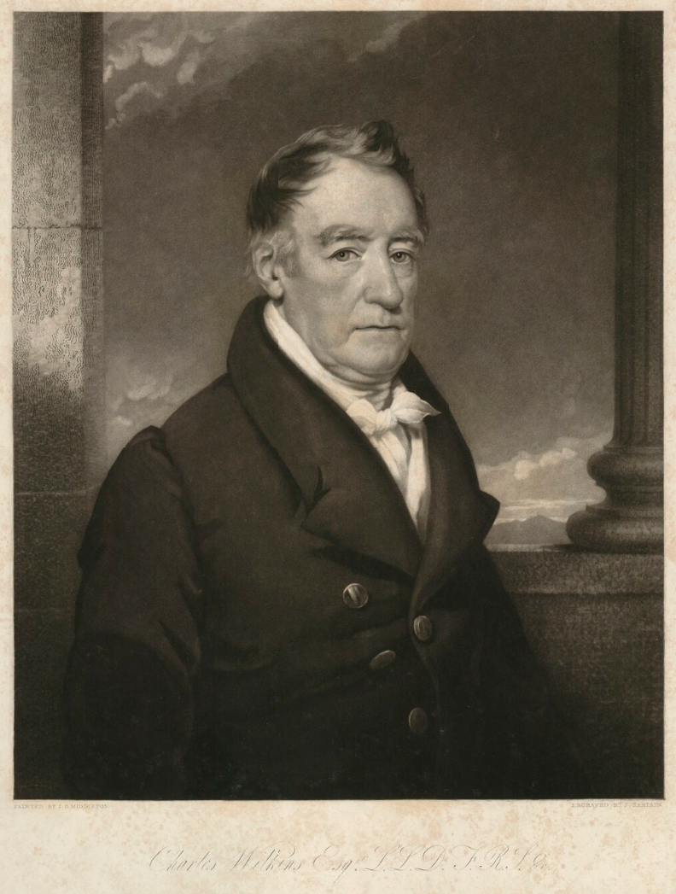
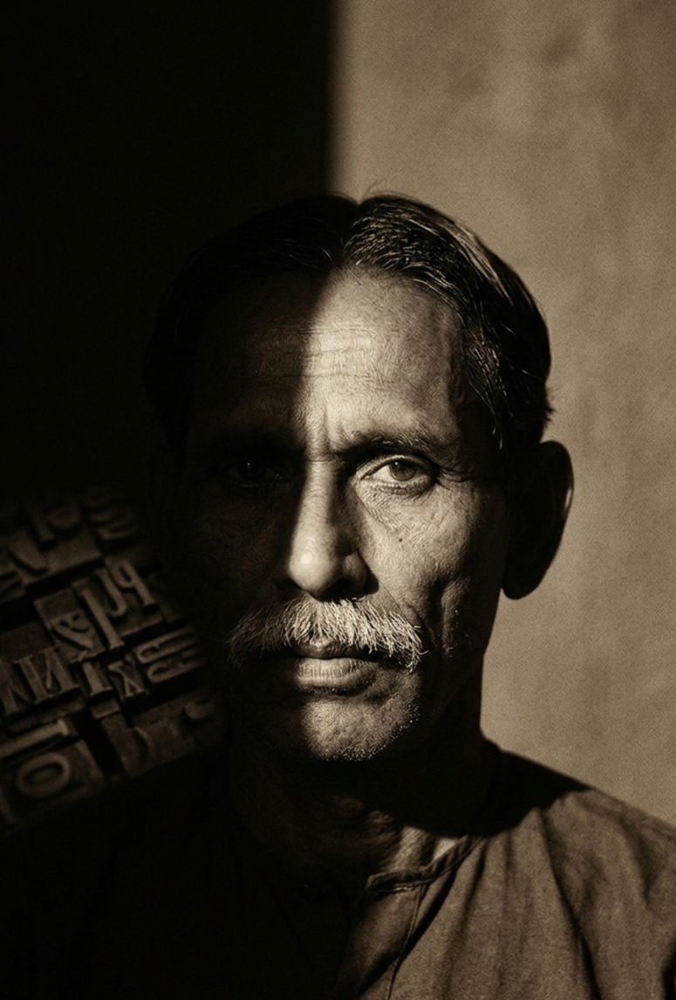
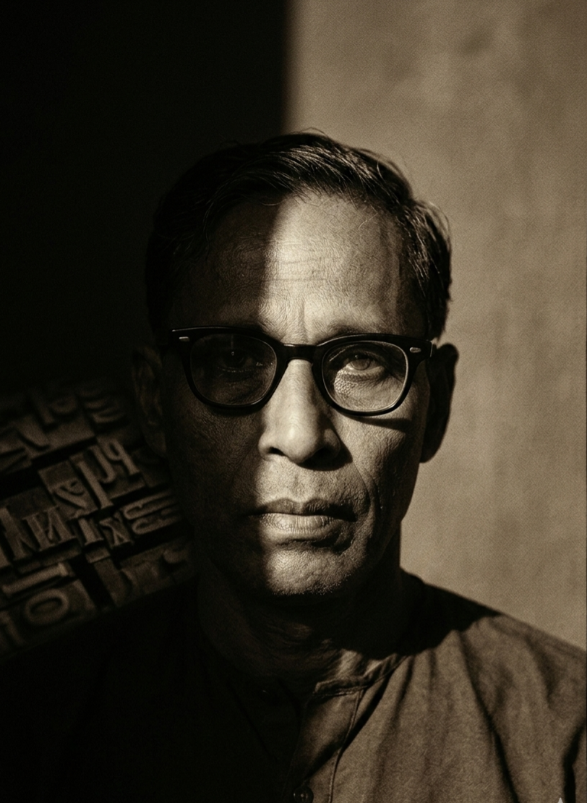
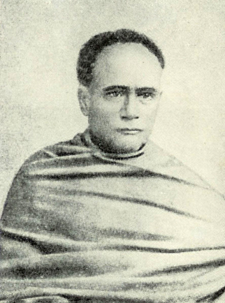
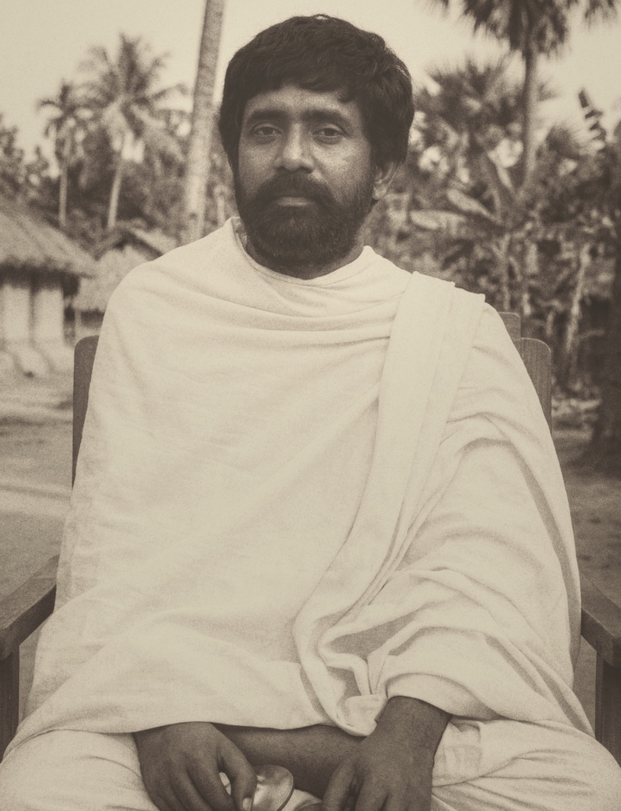
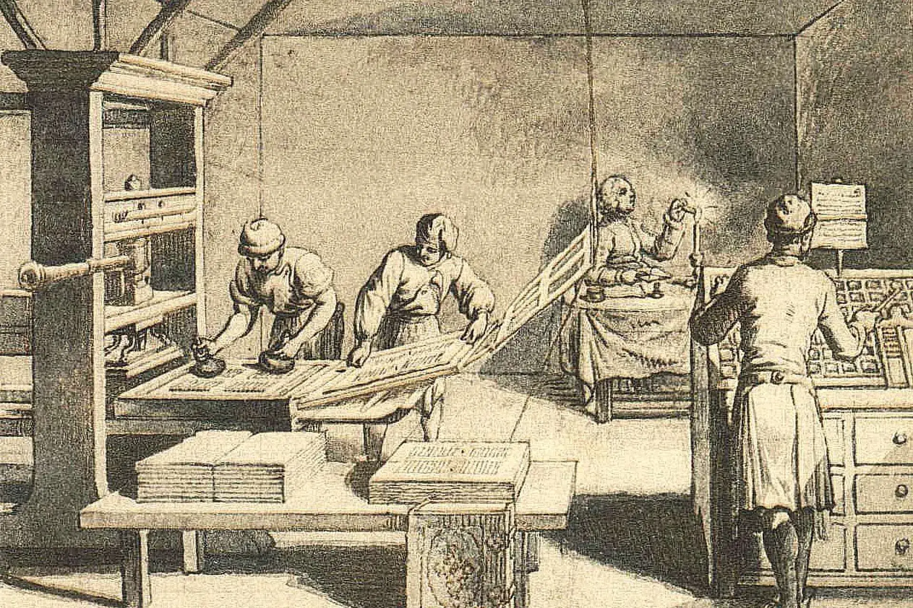

Tribute to the Pioneers of Bengali Printing
As we explore the evolution from print to digital books, we honor those who made Bengali printing possible, transforming how our language and culture were preserved and shared.

Charles Wilkins (1749-1836)
Pioneer of Bengali Typography and Printing
Achievement: Created the first Bengali typeface and printed the first book in Bengali
Charles Wilkins was a British typographer and Orientalist who made an extraordinary contribution to Bengali literature and printing. In 1778, Wilkins designed and cast the first Bengali typeface, revolutionizing how the Bengali language could be printed and distributed.
Historic Achievement: In 1778, Wilkins established the first printing press with Bengali type at Hooghly, near Kolkata. This was a groundbreaking moment in Bengali literary history, as it made mass production of Bengali texts possible for the first time.
First Bengali Book: In 1778, Wilkins printed "A Grammar of the Bengal Language" by Nathaniel Brassey Halhed, which was the first book ever printed in Bengali script. This historic publication opened the door for Bengali literature to reach wider audiences.
Technical Innovation: Wilkins personally designed and cut the Bengali metal types by hand, a painstaking process that required deep understanding of Bengali script's complex characters and ligatures. His typeface became the foundation for Bengali printing for decades to come.
Legacy: Wilkins' work laid the foundation for the Bengali Renaissance (Bengal Renaissance), enabling the mass production of Bengali newspapers, books, and literary works. His contribution made it possible for Bengali culture and knowledge to be preserved and disseminated widely.
The History of Bengali Printing Press
The history of Bengali printing is a story of cultural preservation, technological innovation, and the democratization of knowledge. Before the printing press, Bengali manuscripts were hand-copied by scribes, making books rare and expensive.
The Beginning (1778)
The journey began when Charles Wilkins recognized the need for printed Bengali materials. Working at the British East India Company, Wilkins understood that printing in Bengali would facilitate administration, education, and cultural exchange. His dedication to creating Bengali typefaces was driven by respect for the language and its rich literary tradition.
The first Bengali printing press at Hooghly marked the beginning of a new era. What was once accessible only to wealthy patrons who could afford hand-copied manuscripts became available to a growing reading public.
Early Development (1780-1800)
Following Wilkins' pioneering work, Bengali printing gradually expanded. The technology spread to Kolkata (then Calcutta), which became the center of Bengali publishing. Early printed works included religious texts, educational materials, and administrative documents.
Other Notable Contributors to Bengali Printing

Panchanan Karmakar (1758-1804)
Master Craftsman and Type Designer
Panchanan Karmakar was the brilliant Bengali blacksmith and craftsman who worked closely with Charles Wilkins to create the first Bengali metal types. Born in Tribeni, Hooghly, Karmakar possessed exceptional skill in metalwork and engraving.
Contribution: Working under Wilkins' direction, Karmakar cut and cast the intricate Bengali characters in metal. The complexity of Bengali script, with its numerous conjunct characters, made this an extraordinarily challenging task. Karmakar's craftsmanship was essential to the success of Bengali printing.
Recognition: Though often overshadowed by Wilkins in historical accounts, Panchanan Karmakar's technical expertise and dedication were crucial to making Bengali printing a reality. He represents the often-unsung local artisans whose skills made colonial-era innovations possible.

Gangakishore Bhattacharya (1795-1846)
Pioneer of Bengali Journalism
Gangakishore Bhattacharya was a pioneering Bengali journalist and social reformer who utilized the printing press to spread knowledge and advocate for social change.
Achievement: In 1816, he started publishing "Bengal Gazette" (also known as "Samachar Darpan"), one of the earliest Bengali newspapers. This publication used the printing technology that Wilkins had pioneered to reach Bengali readers across the region.
Impact: Through printed journalism, Bhattacharya helped create an informed Bengali public and contributed to social and educational reforms. His work demonstrated the power of the printing press in shaping public opinion and spreading progressive ideas.

Ishwar Chandra Vidyasagar (1820-1891)
Educator, Publisher, and Reformer
Ishwar Chandra Vidyasagar was one of the most influential figures in Bengali education and publishing during the 19th century. A brilliant scholar and social reformer, he understood the transformative power of printed books.
Publishing Contributions: Vidyasagar established the Sanskrit Press in 1847 and later founded several publishing houses. He authored and published numerous Bengali textbooks that revolutionized education in Bengal, including "Barnaparichay" (Introduction to Letters), which became the standard Bengali primer for generations.
Legacy: His published works made quality education accessible to ordinary Bengalis. By using the printing press to distribute educational materials widely, Vidyasagar helped create a literate Bengali middle class and contributed significantly to the Bengali Renaissance.

Kangal Harinath Majumdar (1833-1896)
Pioneer of Rural Journalism and Social Reform
Known as: "Kangal Harinath" (Friend of the Poor)
Kangal Harinath, born Harinath Majumdar, was a remarkable Bengali journalist, writer, and social reformer who dedicated his life to serving the rural poor and fighting against social injustices through the power of the printed word. His life and work represent the transformative impact that printing press technology had on rural Bengal.
Establishment of "Grambarta Prokashika": In 1863, Kangal Harinath founded one of the first rural newspapers in Bengal, "Grambarta Prokashika" (Village News Herald), published from Kumarkhali. This was a revolutionary initiative—a newspaper dedicated entirely to reporting the conditions, struggles, and voices of rural Bengal. He is the writer of Bijoy Basanta (1859), which is in the list of the first published Bengali novels.
Harinath's Famous Words:
"যদি তোর ডাক শুনে কেউ না আসে তবে একলা চলো রে"
("If no one responds to your call, then go your own way alone")
— A sentiment that influenced Rabindranath Tagore's famous song
Timeline of Bengali Printing History
| Year | Milestone | Significance |
|---|---|---|
| 1778 | Charles Wilkins creates first Bengali typeface | Birth of Bengali printing |
| 1778 | First Bengali book printed (Halhed's Grammar) | First printed Bengali publication |
| 1800 | Bengali printing press established in Kolkata | Commercial printing begins |
| 1816 | First Bengali newspaper "Samachar Darpan" | Beginning of Bengali journalism |
| 1847 | Vidyasagar establishes Sanskrit Press | Educational publishing expands |
| 1855 | Vidyasagar publishes "Barnaparichay" | Standardized Bengali education |
| 1800s | Growth of Bengali literature and publishing | Bengal Renaissance flourishes |
Impact on Bengali Culture and Society
The introduction of Bengali printing press had profound effects on Bengali society:
- Literacy Expansion: Printed books made education more accessible, leading to increased literacy rates
- Cultural Preservation: Bengali literature, poetry, and religious texts could be preserved and widely distributed
- Social Reform: Reformers used printed materials to advocate for women's education, widow remarriage, and other progressive causes
- National Identity: Bengali printing helped forge a sense of Bengali cultural identity and pride
- Knowledge Democratization: Information that was once limited to the elite became available to the masses
- Economic Development: Publishing became an important industry, creating employment and economic opportunities
From Print to Digital: Continuing the Legacy
Today, as we transition from print books to e-books, we continue the same mission that drove Wilkins and his successors: making knowledge accessible to all. Just as the printing press democratized access to Bengali literature and learning in the 18th century, digital technology is now making Bengali books available to readers worldwide through e-books, digital libraries, and online platforms.
The spirit of innovation and dedication to knowledge sharing that characterized the pioneers of Bengali printing lives on in today's digital revolution. Whether printed on paper or displayed on screens, the goal remains the same: preserving and sharing Bengali language, literature, and culture with present and future generations.
— Sadia Akhter Mridha, Ikramul Haque Niaz, Alisha Ahmed, Sohanur Rohman
